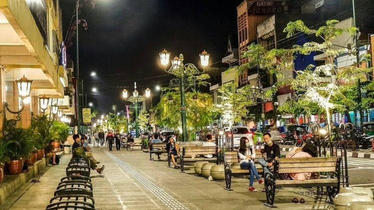

1. Candi Borobudur
Berdasarkan prasasti Karangtengah, diperkirakan Candi Borobudur dibangun oleh Raja Samaratungga dari Wangsa Syailendra dan baru diselesaikan putrinya, Ratu Pramudawardhani, pada abad ke-9.
Sedikit yang diketahui tentang hal lainnya, termasuk siapa arsitek bangunan yang tersusun dari 2 juta balok (55.000 m3) batuan andesit yang saling mengunci bagaikan sebuah puzzle raksasa ini.
Sebuah legenda Jawa bercerita tentang Gunadarma yang berbaring memandang Candi Borobudur sampai tertidur dan tubuhnya berubah menjadi perbukitan Menoreh. Gunadarma kemudian dianggap sebagai arsitek Candi Borobudur meskipun tidak ada prasasti bersejarah tentang hal itu.

2. Candi Prambanan
Candi Prambanan dibangun pada abad ke-9.
Menjulang setinggi 47 meter dengan ornamen yang mengagumkan, kecantikan candi Hindu ini tak tertandingi.
Candi Prambanan terletak 17 km ke arah timur dari pusat Kota Jogja dan bisa dijangkau dengan bus Trans Jogja.
Dahulu kala ada seorang putri yang sangat cantik bernama Roro Jonggrang. Kecantikan itu memikat seorang pangeran untuk meminangnya.
Roro Jonggrang mengajukan syarat untuk membangun seribu candi dalam semalam sebagai penolakan halus atas pinangan tersebut.
Namun, Bandung Bondowoso tetap menyanggupinya.
Bandung Bondowoso kemudian meminta bantuan makhluk halus untuk membangun seribu candi dalam semalam.
Ketika 999 candi sudah berdiri, Roro Jonggrang menyuruh penduduk desa menyalakan api unggun dan menumbuk padi dengan lesung.
Para jin mengira fajar telah tiba lalu lari tunggang langgang.
Bandung Bondowoso yang murka atas tipu muslihat Roro Jonggrang mengutuknya menjadi patung batu untuk melengkapi candi ke-1000.
"Sampai sekarang patung itu masih ada, nanti njenengan bisa lihat sendiri," ujar sopir taksi tersebut.
Tanpa terasa, kami hampir sampai. Candi Roro Jonggrang yang menjulang setinggi 47 meter itu sudah tampak dari jalan raya.
Wow, dari jauh pun keindahan candi ini sudah memukau!

3. Malioboro
Malioboro adalah jantung Kota Jogja.
Tak heran bila banyak penginapan murah dekat Malioboro, meskipun sekarang banyak hotel berbintang.
Meskipun terkenal sebagai surga belanja cendera mata dan barang kerajinan, ternyata tak sedikit wisatawan dan orang lokal mendatangi Malioboro pagi-pagi sekali untuk berolahraga atau sekedar menikmati udara segar sambil mencari sarapan.
Wisatawan tersebut biasanya menginap di hotel sekitar Malioboro.

4. Bukit Bintang
Sebagai salah satu tempat dengan lanskap senja dan malam yang mempesona, Bukit Bintang menjadi tempat favorit bagi banyak kaum muda di Jogja.
Terletak di tepi Jalan Jogja-Wonosari, Bukit Bintang begitu mudah didatangi.
Pemandangan Kota Yogyakarta berlatar Gunung Merapi dan Merbabu tersaji di depan mata.
Anda bisa duduk di kursi beton di atas tebing atau di warung-warung yang menyediakan kopi dan jagung bakar sembari menunggu matahari tenggelam.
Ketika langit semakin gelap, bintang di langit luas dan kerlip lampu bagai lautan bintang menjadikan tempat ini begitu romantis.

5. Pantai Indrayanti
Selain menawarkan pesona pantai berpasir putih dengan air laut yang jernih, Indrayanti juga menawarkan sensasi dinner romantis bertabur bintang di restoran yang terletak di tepi pantai.
Terletak di sebelah timur Pantai Sundak, pantai yang dibatasi bukit karang ini merupakan salah satu pantai yang menyajikan pemandangan berbeda dibandingkan pantai-pantai lain yang ada di Gunungkidul.
Tidak hanya berhiaskan pasir putih, bukit karang, dan air biru jernih yang seolah memanggil-manggil wisatawan untuk menceburkan diri ke dalamnya, Pantai Indrayanti juga dilengkapi restoran dan cafe serta deretan penginapan yang akan memanjakan wisatawan.
Beragam menu mulai dari hidangan laut hingga nasi goreng bisa di pesan di restoran yang menghadap ke pantai ini. Pada malam hari, gazebo-gazebo yang ada di bibir pantai akan terlihat cantik karena diterangi kerlip sinar lampu.
Menikmati makan malam di cafe ini ditemani desau angin dan alunan debur ombak akan menjadi pengalaman romantis yang tak terlupa.
Penyebutan nama Pantai Indrayanti sebelumnya menuai banyak kontraversi.
Indrayanti bukanlah nama pantai, melainkan nama pemilik cafe dan restoran.
Berhubung nama Indrayanti yang terpampang di papan nama cafe dan restoran pantai, akhirnya masyarakat menyebut pantai ini dengan nama Pantai Indrayanti. Sedangkan pemerintah menamai pantai ini dengan nama Pantai Pulang Syawal.
Namun nama Indrayanti jauh lebih populer dan lebih sering disebut daripada Pulang Syawal. Keterlibatan pihak swasta dalam pengelolaan Pantai Indrayanti rupanya turut membawa dampak positif.
Berbeda dengan pantai-pantai lain yang agak kotor, sepanjang garis pantai Indrayanti terlihat bersih dan bebas dari sampah. Hal ini dikarenakan pengelola tak segan-segan menjatuhkan denda untuk tiap sampah yang dibuang oleh wisatawan secara sembarangan.
Karena itu Indrayanti menjadi tempat yang nyaman untuk dikunjungi.